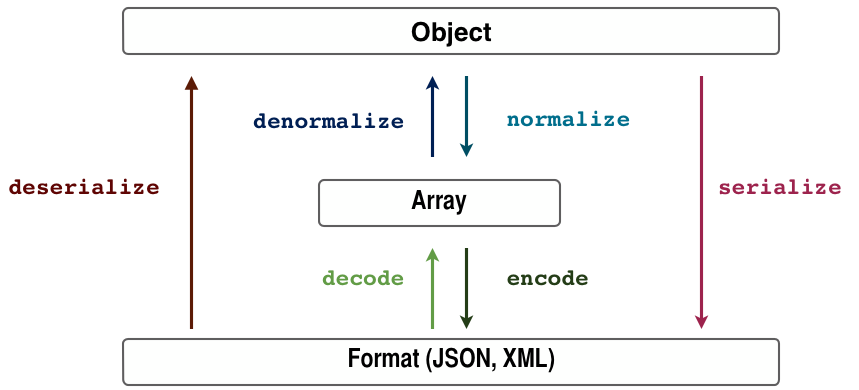

The Serializer Component¶
The Serializer component is meant to be used to turn objects into a specific format (XML, JSON, YAML, ...) and the other way around.
In order to do so, the Serializer component follows the following simple schema.
As you can see in the picture above, an array is used as a man in the middle. This way, Encoders will only deal with turning specific formats into arrays and vice versa. The same way, Normalizers will deal with turning specific objects into arrays and vice versa.
Serialization is a complicated topic, and while this component may not work in all cases, it can be a useful tool while developing tools to serialize and deserialize your objects.
Installation¶
You can install the component in 2 different ways:
- Install it via Composer (
symfony/serializeron Packagist); - Use the official Git repository (https://github.com/symfony/Serializer).
Usage¶
Using the Serializer component is really simple. You just need to set up
the Serializer specifying
which Encoders and Normalizer are going to be available:
use Symfony\Component\Serializer\Serializer;
use Symfony\Component\Serializer\Encoder\XmlEncoder;
use Symfony\Component\Serializer\Encoder\JsonEncoder;
use Symfony\Component\Serializer\Normalizer\GetSetMethodNormalizer;
$encoders = array(new XmlEncoder(), new JsonEncoder());
$normalizers = array(new GetSetMethodNormalizer());
$serializer = new Serializer($normalizers, $encoders);
There are several normalizers available, e.g. the
GetSetMethodNormalizer or
the PropertyNormalizer.
To read more about them, refer to the Normalizers section of this page. All
the examples shown below use the GetSetMethodNormalizer.
Serializing an Object¶
For the sake of this example, assume the following class already exists in your project:
namespace Acme;
class Person
{
private $age;
private $name;
private $sportsman;
// Getters
public function getName()
{
return $this->name;
}
public function getAge()
{
return $this->age;
}
// Issers
public function isSportsman()
{
return $this->sportsman;
}
// Setters
public function setName($name)
{
$this->name = $name;
}
public function setAge($age)
{
$this->age = $age;
}
public function setSportsman($sportsman)
{
$this->sportsman = $sportsman;
}
}
Now, if you want to serialize this object into JSON, you only need to use the Serializer service created before:
$person = new Acme\Person();
$person->setName('foo');
$person->setAge(99);
$person->setSportsman(false);
$jsonContent = $serializer->serialize($person, 'json');
// $jsonContent contains {"name":"foo","age":99,"sportsman":false}
echo $jsonContent; // or return it in a Response
The first parameter of the serialize()
is the object to be serialized and the second is used to choose the proper encoder,
in this case JsonEncoder.
Ignoring Attributes when Serializing¶
2.3 新版功能: The GetSetMethodNormalizer::setIgnoredAttributes
method was introduced in Symfony 2.3.
As an option, there’s a way to ignore attributes from the origin object when
serializing. To remove those attributes use the
setIgnoredAttributes()
method on the normalizer definition:
use Symfony\Component\Serializer\Serializer;
use Symfony\Component\Serializer\Encoder\JsonEncoder;
use Symfony\Component\Serializer\Normalizer\GetSetMethodNormalizer;
$normalizer = new GetSetMethodNormalizer();
$normalizer->setIgnoredAttributes(array('age'));
$encoder = new JsonEncoder();
$serializer = new Serializer(array($normalizer), array($encoder));
$serializer->serialize($person, 'json'); // Output: {"name":"foo","sportsman":false}
Deserializing an Object¶
You’ll now learn how to do the exact opposite. This time, the information
of the Person class would be encoded in XML format:
$data = <<<EOF
<person>
<name>foo</name>
<age>99</age>
<sportsman>false</sportsman>
</person>
EOF;
$person = $serializer->deserialize($data, 'Acme\Person', 'xml');
In this case, deserialize()
needs three parameters:
- The information to be decoded
- The name of the class this information will be decoded to
- The encoder used to convert that information into an array
Converting Property Names when Serializing and Deserializing¶
2.7 新版功能: The NameConverterInterface
interface was introduced in Symfony 2.7.
Sometimes serialized attributes must be named differently than properties or getter/setter methods of PHP classes.
The Serializer Component provides a handy way to translate or map PHP field names to serialized names: The Name Converter System.
Given you have the following object:
class Company
{
public name;
public address;
}
And in the serialized form, all attributes must be prefixed by org_ like
the following:
{"org_name": "Acme Inc.", "org_address": "123 Main Street, Big City"}
A custom name converter can handle such cases:
use Symfony\Component\Serializer\NameConverter\NameConverterInterface;
class OrgPrefixNameConverter implements NameConverterInterface
{
public function normalize($propertyName)
{
return 'org_'.$propertyName;
}
public function denormalize($propertyName)
{
// remove org_ prefix
return 'org_' === substr($propertyName, 0, 4) ? substr($propertyName, 4) : $propertyName;
}
}
The custom normalizer can be used by passing it as second parameter of any
class extending AbstractNormalizer,
including GetSetMethodNormalizer
and PropertyNormalizer:
use Symfony\Component\Serializer\Encoder\JsonEncoder
use Symfony\Component\Serializer\Normalizer\PropertyNormalizer;
use Symfony\Component\Serializer\Serializer;
$nameConverter = new OrgPrefixNameConverter();
$normalizer = new PropertyNormalizer(null, $nameConverter);
$serializer = new Serializer(array(new JsonEncoder()), array($normalizer));
$obj = new Company();
$obj->name = 'Acme Inc.';
$obj->address = '123 Main Street, Big City';
$json = $serializer->serialize($obj);
// {"org_name": "Acme Inc.", "org_address": "123 Main Street, Big City"}
$objCopy = $serializer->deserialize($json);
// Same data as $obj
CamelCase to snake_case¶
2.7 新版功能: The CamelCaseToUnderscoreNameConverter
interface was introduced in Symfony 2.7.
In many formats, it’s common to use underscores to separate words (also known as snake_case). However, PSR-1 specifies that the preferred style for PHP properties and methods is CamelCase.
Symfony provides a built-in name converter designed to transform between snake_case and CamelCased styles during serialization and deserialization processes:
use Symfony\Component\Serializer\NameConverter\CamelCaseToSnakeCaseNameConverter;
use Symfony\Component\Serializer\Normalizer\GetSetMethodNormalizer;
$normalizer = new GetSetMethodNormalizer(null, new CamelCaseToSnakeCaseNameConverter());
class Person
{
private $firstName;
public function __construct($firstName)
{
$this->firstName = $firstName;
}
public function getFirstName()
{
return $this->firstName;
}
}
$kevin = new Person('Kévin');
$normalizer->normalize($kevin);
// ['first_name' => 'Kévin'];
$anne = $normalizer->denormalize(array('first_name' => 'Anne'), 'Person');
// Person object with firstName: 'Anne'
Serializing Boolean Attributes¶
If you are using isser methods (methods prefixed by is, like
Acme\Person::isSportsman()), the Serializer component will automatically
detect and use it to serialize related attributes.
Using Callbacks to Serialize Properties with Object Instances¶
When serializing, you can set a callback to format a specific object property:
use Acme\Person;
use Symfony\Component\Serializer\Encoder\JsonEncoder;
use Symfony\Component\Serializer\Normalizer\GetSetMethodNormalizer;
use Symfony\Component\Serializer\Serializer;
$encoder = new JsonEncoder();
$normalizer = new GetSetMethodNormalizer();
$callback = function ($dateTime) {
return $dateTime instanceof \DateTime
? $dateTime->format(\DateTime::ISO8601)
: '';
};
$normalizer->setCallbacks(array('createdAt' => $callback));
$serializer = new Serializer(array($normalizer), array($encoder));
$person = new Person();
$person->setName('cordoval');
$person->setAge(34);
$person->setCreatedAt(new \DateTime('now'));
$serializer->serialize($person, 'json');
// Output: {"name":"cordoval", "age": 34, "createdAt": "2014-03-22T09:43:12-0500"}
Normalizers¶
There are several types of normalizers available:
GetSetMethodNormalizerThis normalizer reads the content of the class by calling the “getters” (public methods starting with “get”). It will denormalize data by calling the constructor and the “setters” (public methods starting with “set”).
Objects are serialized to a map of property names (method name stripped of the “get” prefix and converted to lower case) to property values.
PropertyNormalizer- This normalizer directly reads and writes public properties as well as private and protected properties. Objects are normalized to a map of property names to property values.
2.6 新版功能: The
PropertyNormalizer
class was introduced in Symfony 2.6.
Handling Circular References¶
2.6 新版功能: Handling of circular references was introduced in Symfony 2.6. In previous versions of Symfony, circular references led to infinite loops.
Circular references are common when dealing with entity relations:
class Organization
{
private $name;
private $members;
public function setName($name)
{
$this->name = $name;
}
public function getName()
{
return $this->name;
}
public function setMembers(array $members)
{
$this->members = $members;
}
public function getMembers()
{
return $this->members;
}
}
class Member
{
private $name;
private $organization;
public function setName($name)
{
$this->name = $name;
}
public function getName()
{
return $this->name;
}
public function setOrganization(Organization $organization)
{
$this->organization = $organization;
}
public function getOrganization()
{
return $this->organization;
}
}
To avoid infinite loops, GetSetMethodNormalizer
throws a CircularReferenceException
when such a case is encountered:
$member = new Member();
$member->setName('Kévin');
$org = new Organization();
$org->setName('Les-Tilleuls.coop');
$org->setMembers(array($member));
$member->setOrganization($org);
echo $serializer->serialize($org, 'json'); // Throws a CircularReferenceException
The setCircularReferenceLimit() method of this normalizer sets the number
of times it will serialize the same object before considering it a circular
reference. Its default value is 1.
Instead of throwing an exception, circular references can also be handled by custom callables. This is especially useful when serializing entities having unique identifiers:
$encoder = new JsonEncoder();
$normalizer = new GetSetMethodNormalizer();
$normalizer->setCircularReferenceHandler(function ($object) {
return $object->getName();
});
$serializer = new Serializer(array($normalizer), array($encoder));
echo $serializer->serialize($org, 'json');
// {"name":"Les-Tilleuls.coop","members":[{"name":"K\u00e9vin", organization: "Les-Tilleuls.coop"}]}
JMSSerializer¶
A popular third-party library, JMS serializer, provides a more sophisticated albeit more complex solution. This library includes the ability to configure how your objects should be serialized/deserialized via annotations (as well as YAML, XML and PHP), integration with the Doctrine ORM, and handling of other complex cases.